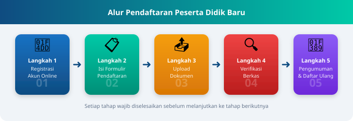

Alur Pendaftaran Siswa Baru
Berikut adalah langkah-langkah yang harus dilakukan oleh calon peserta didik untuk mengikuti seleksi penerimaan siswa baru di Garuda International School.

Prosedur Lengkap Alur Pendaftaran
- Registrasi Akun Online — Calon peserta didik mendaftar dan membuat akun di portal PPDB menggunakan alamat email yang aktif.
- Isi Formulir Pendaftaran — Login ke akun, kemudian mengisi formulir biodata diri secara lengkap dan benar sesuai dokumen resmi (KK/Akta Lahir).
- Upload Dokumen Persyaratan — Mengunggah berkas pendukung seperti scan Kartu Keluarga, Akta Kelahiran, Rapor, dan Sertifikat Prestasi (jika memilih jalur Prestasi).
- Verifikasi Berkas oleh Panitia — Tim panitia PPDB akan memverifikasi seluruh dokumen yang diunggah dalam kurun waktu yang telah ditetapkan.
- Pengumuman Hasil Seleksi — Hasil seleksi diumumkan melalui portal dan papan pengumuman sekolah pada tanggal yang telah dijadwalkan.
- Daftar Ulang — Calon peserta didik yang dinyatakan diterima wajib melakukan daftar ulang secara langsung ke sekolah dengan membawa seluruh berkas asli sesuai jadwal yang ditentukan.